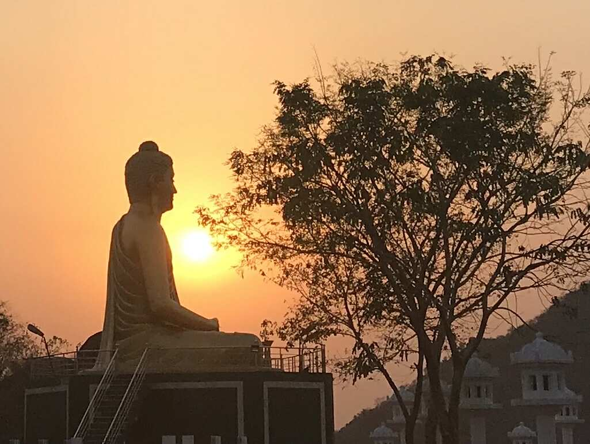

Walking the path of the Dhamma — nurturing wisdom, cultivating loving-kindness, and serving humanity through the timeless teachings of the Buddha.
ダンマの道を歩む — 智慧を育み、慈悲を培い、仏陀の永遠の教えを通して人類に奉仕します。
Our Inspiration
私たちのインスピレーション
Gautama Buddha 563 BCE – 483 BCE
ガウタマ・ブッダ 紀元前563年 – 483年
The Awakened One
目覚めた者
Siddhartha Gautama attained enlightenment under the Bodhi tree at Bodh Gaya, becoming the Buddha — the Awakened One. His teachings of the Four Noble Truths and the Noble Eightfold Path offer a profound roadmap from suffering to liberation.
Buddhism spread throughout Asia and now encompasses many traditions worldwide, united by core values of compassion, mindfulness, and the pursuit of wisdom.
A sacred ground on the banks of Wainganga River — a living centre of Buddhist practice and cultural heritage, with the magnificent Maha Stupa inaugurated in 2007.
ワインガンガ川のほとりの神聖な聖地。2007年開幕の大仏塔を持つ仏教実践の生きた中心地。
Learn More →
詳細を見る →

Pradnyagiri
プラドニャギリ
A spiritually significant mountain in Dongargarh with a majestic 30-ft meditating Buddha statue symbolising world peace and universal brotherhood.
世界平和と普遍的な友愛を象徴する30フィートの仏陀像が建立された霊山。
Learn More →
詳細を見る →
Pannya Metta Sangha Library
パンニャ・メッタ・サンガ図書館
A treasure trove of Buddhist scriptures, Dr. Ambedkar's writings, and literature on social justice — open to scholars, students and the community.
仏教経典、アンベードカル博士の著作、社会正義文学を所蔵する図書館。
Learn More →
詳細を見る →
Pannya Metta Balsadan
パンニャ・メッタ・バルサダン
A loving home for orphan children at Sindhpuri, Pauni — providing shelter, education, and healthcare since 1995.
1995年設立。孤児に住居、教育、医療を提供するパウニの慈悲の家。
Learn More →
詳細を見る →
Looking Ahead
未来を見据えて
Upcoming Projects
今後のプロジェクト
🌟
Youth Organisation
青年組織
Launching a dedicated youth wing for dhamma study, leadership development, and community service initiatives.
ダルマの学習、リーダーシップ開発、地域奉仕活動のための専用青年部の立ち上げ。
👁️
Cataract Surgery Program
白内障手術プログラム
Expanding free cataract surgery services to more villages across Bhandara and Gadchiroli districts.
バンダーラ・ガドチロリ地区のより多くの村への無料白内障手術サービスの拡大。
🩸
Monthly Sanitary Pad Distribution
月次衛生パッド配布
Free menstrual hygiene products for underprivileged women and girls, promoting dignity and health.
Venerable Sangharatna Manake leads Pannya Metta Sangha with a deep commitment to the Buddha's timeless vision. Under his guidance, the organisation weaves together Pannya (wisdom) and Metta (loving-kindness) into every aspect of its mission.
Through meditation retreats, educational programs, and grassroots welfare initiatives, he nurtures a living tradition that bridges ancient wisdom with contemporary social needs.
Pannya Metta Sangha (PMS) is a spiritual and social organization dedicated to promoting wisdom, loving-kindness, and community service. Our name embodies our core identity: Pannya (Wisdom), Metta (Loving-Kindness), and Sangha (Community).
Founded in 1982, our mission is to spread the teachings of mindfulness and ethical living while actively engaging in social welfare. We welcome all who seek to walk the path of wisdom and compassion.
Exploring the roots of Buddhism, the revolutionary work of Dr. B.R. Ambedkar, and our sacred connection with Saichoji Temple in Japan.
仏教の根源、アンベードカル博士の革命的な業績、そして日本の西光寺との神聖なつながりを探ります。
☸ Buddhism — The Path of Awakening
☸ 仏教 — 覚醒への道
Origin of Buddhism
仏教の起源
Buddhism originated in ancient India around the 5th century BCE, founded by Siddhartha Gautama — the Shakyamuni Buddha. Born into a royal family in Lumbini (present-day Nepal), Siddhartha renounced his privileged life to seek an answer to the universal problem of human suffering.
After years of asceticism and meditation, Siddhartha attained enlightenment under the sacred Bodhi Tree at Bodh Gaya, becoming the Buddha — the "Awakened One." He then delivered his first sermon at Sarnath, setting the Wheel of Dhamma in motion.
Dukkha — The truth of suffering: life involves unsatisfactoriness and impermanence
Samudaya — The origin of suffering: craving and attachment are the root causes
Nirodha — The cessation of suffering: liberation is possible through the ending of craving
Magga — The path to liberation: the Noble Eightfold Path
苦諦 — 苦しみの真実：人生には不満足と無常が伴う
集諦 — 苦しみの原因：渇望と執着が根本原因
滅諦 — 苦しみの滅：渇望の終焉によって解脱は可能
道諦 — 解脱への道：八正道
The Noble Eightfold Path encompasses Right View, Right Intention, Right Speech, Right Action, Right Livelihood, Right Effort, Right Mindfulness, and Right Concentration.
八正道は正見、正思惟、正語、正業、正命、正精進、正念、正定を含みます。
Spread of Buddhism Across Asia
アジア全土への仏教の広まり
Under Emperor Ashoka's patronage in the 3rd century BCE, Buddhism spread throughout India and beyond — reaching Sri Lanka, Southeast Asia, Central Asia, China, Korea, Japan, and Tibet. Today, over 500 million people worldwide follow Buddhist teachings.
Dr. Bhimrao Ramji Ambedkar (1891–1956) was a jurist, economist, social reformer, and the principal architect of the Indian Constitution. Born into the "Untouchable" Mahar caste, he dedicated his life to fighting caste discrimination and seeking liberation for millions of oppressed people.
On October 14, 1956, Dr. Ambedkar, along with approximately 600,000 of his followers, converted to Buddhism at Deekshabhoomi in Nagpur — one of the largest mass religious conversions in history. This event marked the beginning of the modern Buddhist revival in India.
Dr. Ambedkar developed what he called "Navayana" (New Vehicle) Buddhism — a reinterpretation that emphasises social equality, human rights, and rational inquiry. His monumental work "The Buddha and His Dhamma" remains the guiding scripture for millions of Ambedkarite Buddhists in India.
For Dr. Ambedkar, Buddhism was not merely a religion but a social philosophy of liberation. He saw in the Buddha's teachings a radical challenge to the caste system — a path toward a society based on liberty, equality, and fraternity.
Saichoji is a revered Buddhist temple in Japan that has developed a meaningful and enduring relationship with Pannya Metta Sangha. This Indo-Japanese Buddhist connection embodies the universal spirit of the Dhamma, transcending cultural and national boundaries.
Saichoji Temple has a rich history rooted in Japanese Buddhist tradition. The temple serves as a vital bridge between Japanese Buddhism and the Navayana Buddhist movement in India, fostering cultural and spiritual exchange that deepens understanding between both communities.
The relationship between Saichoji and Pannya Metta Sangha has blossomed through decades of collaboration — including joint programs, exchange visits, support for the Balsadan children's home, and participation in the annual Dhammasangashti events. This sacred bond reflects the Sangha's commitment to international Buddhist solidarity.
A spiritual and social organisation rooted in the teachings of the Buddha, dedicated to wisdom, compassion, and community welfare since 1982.
1982年から仏陀の教えに根ざし、智慧、慈悲、地域福祉に専念する精神的・社会的組織。
🏛️ History & Founding Vision
🏛️ 歴史と設立ビジョン
Pannya Metta Sangha was founded in 1982 (Registered No. MAH 586/82, F-3849(NAG)) with a vision to create a compassionate community grounded in Buddhist values. Born in the wake of Dr. Ambedkar's historic conversion movement, the Sangha emerged as a beacon of hope for communities seeking spiritual and social transformation.
The founding members were inspired by the threefold path of Pannya (Wisdom), Metta (Loving-Kindness), and Sangha (Community) — understanding that true liberation encompasses both spiritual development and social responsibility.
At the heart of Pannya Metta Sangha's mission is the living application of Buddhist philosophy. We draw equally from the Theravada tradition's emphasis on meditation and personal liberation, and from Dr. Ambedkar's Navayana interpretation which foregrounds social equality and collective action.
Our philosophical framework recognises that the Dhamma must be engaged with not only in the meditation hall but in every sphere of life — in schools, hospitals, homes, and communities. The Sangha practices the Bodhisattva ideal of working for the liberation of all beings.
Community service is not peripheral to our spiritual mission — it is its living expression. Over four decades, Pannya Metta Sangha has undertaken wide-ranging welfare activities spanning education, healthcare, women's empowerment, and rural development.
40+
Years of Service
奉仕の年月
500+
Annual Eye Surgeries
年間眼科手術
32
Children at Balsadan
バルサダンの子どもたち
5L+
Pilgrim Visitors
巡礼者
Our welfare activities include the Pannya Metta Balsadan (children's home), annual medical camps, mobile hospital services, cataract surgery programs, COVID-19 relief, monthly sanitary pad distribution, and rural scholarships.
Pannya Metta Sangha actively promotes Buddhist art, literature, and culture as vehicles of Dhamma propagation. Our annual Mahasamadhibhumi Magazine serves as a platform for Buddhist scholarship and community news. We support cultural events, essay competitions, and artistic programs that deepen community engagement with Buddhist heritage.
The organisation has established a library, facilitated international Buddhist exchanges with Japan, and has been instrumental in organising the annual Dhammasangashti — a major Buddhist convention drawing thousands from across India and abroad.
Pradnyagiri — the "Hill of Wisdom" — is a spiritually significant mountain located in the Dongargarh region of Rajnandgaon district, Chhattisgarh State, standing at 200 meters above sea level. The site was developed by Pannya Metta Sangha as a Buddhist pilgrimage and meditation centre in the heart of central India.
The International Buddhist Conference held here on 6th February 2017 drew participants from Japan, Thailand, Sri Lanka, Tibet, Korea, Taiwan, and across India — drawing over 5 lakh devotees. It has since become a landmark Buddhist site in the region.
The centrepiece of Pradnyagiri is a magnificent 30-foot meditating Buddha statue, installed on a 30-foot elevated stage — making it visible from great distances. The statue depicts the Dhyana mudra (meditation posture) and radiates a profound sense of peace and spiritual serenity.
The Tathagat Buddha statue communicates the universal message of world peace and brotherhood, welcoming all who climb the hill to sit in the presence of the Awakened One.
The 6th February annual Buddhist gathering at Pradnyagiri is one of the most anticipated events in the Sangha's calendar. Thousands of devotees journey to the hilltop for prayers, dhamma talks, cultural programs, and community service activities.
Social welfare activities organised in conjunction with this gathering include free medical check-ups, distribution of educational materials, and community outreach programs for surrounding villages. The foundation stone of the statue and the site's social service mission remain deeply intertwined.
The Grand Buddhist Convention — bringing thousands together in the spirit of Dhamma, wisdom, and community fellowship.
盛大な仏教大会 — ダンマ、智慧、コミュニティの友愛の精神で何千人もが集います。
📅 Dhammasangashti 2025
📅 ダンマサンガシュティ 2025
The 2025 Dhammasangashti was a landmark gathering at Mahasamadhibhumi, Pauni — bringing together Buddhist scholars, monks, devotees, and community members from across India and internationally.
Dhammasangashti 2026 continues the grand tradition with expanded programs, international participation, and a renewed focus on youth engagement and social welfare.
The Dhammadhvaj (Dhamma Flag) Rally is the electrifying opening to the 8th February Dhammotsav. Thousands of devotees march from nearby towns and villages to Mahasamadhibhumi, carrying the blue-and-white Buddhist flag high as a symbol of unity, pride, and commitment to the Dhamma.
The rally route passes through the historic areas of Pauni, bringing the message of Buddhism to every street and neighbourhood. The procession is accompanied by Buddhist songs, chanting, and the joyful energy of a community united in faith.
The centrepiece of the 8th February program is the Vandana — the collective act of reverence — performed at the Mahasamadhibhumi Maha Stupa. Thousands gather in the shadow of this magnificent structure to offer flowers, incense, and prayers, and to recite the Vandana Gatha in unison.
Following the Vandana, a community vegetarian feast is organised for all attendees. The lunch program is a beautiful expression of Dana — the spirit of giving — as volunteers prepare and serve thousands of meals to pilgrims, the poor, and all who attend.
The afternoon of 8th February is dedicated to Dhamma discussions — open forums where monks, scholars, and lay practitioners engage in dialogue on Buddhist teachings, social issues, and community welfare. These sessions are open to all, regardless of background.
Special sessions for women, youth, and children are also organised. Public participation is warmly encouraged, and the convention centre becomes a vibrant marketplace of ideas, teachings, and community connection.
The Triratna Buddha Vihar in Balaghat represents a significant expansion of Pannya Metta Sangha's mission into the Balaghat district of Madhya Pradesh. The Vihar serves as a meditation centre, dhamma study hall, and community gathering space for the local Buddhist community.
The meditation center offers regular sittings, dhamma classes, and spiritual guidance to practitioners from the surrounding areas — making the path of the Buddha accessible to a new generation of seekers.
The Triratna Buddha Vihar was established through the dedicated efforts of the Balaghat Buddhist community in collaboration with Pannya Metta Sangha. The founding was inspired by the vision of creating a permanent spiritual home for Buddhists in the Balaghat region — a place of practice, learning, and community gathering.
Dhammashikar Bhanteji is a revered monk who has played a pivotal role in establishing and guiding the Triratna Buddha Vihar. His deep knowledge of Dhamma, compassionate teaching style, and tireless service to the community have made him a beloved spiritual guide in the Balaghat region.
Dhammatap Bhanteji brings the warmth of Metta and the clarity of Pannya to his spiritual work in Balaghat. A dedicated practitioner and teacher, he has been instrumental in growing the local sangha and in making the Vihar a vibrant centre of Buddhist life.
Regular discourse sessions by Dhammashikar Bhanteji and Dhammatap Bhanteji on Buddhist teachings and ethics
仏教の教えと倫理に関するバンテジによる定期的な法話セッション
Rally
ラリー
Community rallies spreading Buddhist awareness and the message of Dhamma through Balaghat district
バラガット地区全体に仏教意識とダンマのメッセージを広めるコミュニティラリー
Chivar Daan
チヴァラ・ダーン
Offering of robes (chivar) to the monks — a meritorious act of generosity and community support
僧侶への袈裟（チヴァラ）の供養 — 功徳ある寛大さとコミュニティ支援の行為
Opening Ceremony
開所式
Grand inauguration of the Triratna Buddha Vihar with religious rites, community celebration, and dhamma talks
宗教儀式、コミュニティのお祝い、法話を伴うトリラトナ・ブッダ・ヴィハーラの盛大な開所式
Sambhashan
サンバーシャン
Community dialogue sessions — open discussions on Dhamma, social issues, and community development
ダンマ、社会問題、地域開発に関するオープンな議論によるコミュニティ対話セッション
Meditation Center Activities
瞑想センター活動
Daily meditation sittings, mindfulness workshops, and vipassana retreats for all levels
すべてのレベルのための日々の坐禅、マインドフルネスワークショップ、ヴィパッサナーリトリート
Annual Program
年次プログラム
Mahasamadhibhumi Essay Competition
マハーサマーディブーミ作文コンクール
Inspiring young minds through the power of words — nurturing a new generation of Buddhist scholars and social thinkers.
言葉の力を通じて若い心を刺激する — 仏教学者と社会思想家の新世代を育成します。
✏️ Competition Overview
✏️ コンクール概要
The Mahasamadhibhumi Essay Competition is an annual academic event organised by Pannya Metta Sangha to engage students with Buddhist philosophy, Dr. Ambedkar's legacy, and themes of social justice and community welfare.
Open to students from primary to post-graduate level, the competition encourages young people to explore, research, and articulate ideas on topics that matter deeply to our community and our world.
Each year, hundreds of students from schools and colleges across the region participate in the competition. Topics are drawn from Buddhist teachings, Dr. Ambedkar's life and work, social issues, and contemporary community challenges.
Students submit essays that are evaluated by a panel of distinguished scholars and educators. The competition fosters critical thinking, research skills, and an appreciation for the intellectual riches of Buddhist thought.
Winners are recognized at the annual Dhammasangashti ceremony, receiving certificates, medals, and prizes in the presence of Venerable Sangharatna Manake and the assembled Sangha community.
🥇
First Prize
1等賞
Certificate, medal, and cash prize — presented at Dhammasangashti
証明書、メダル、賞金 — ダンマサンガシュティで授与
🥈
Second Prize
2等賞
Certificate, medal, and books — presented at Dhammasangashti
証明書、メダル、書籍 — ダンマサンガシュティで授与
🥉
Third Prize
3等賞
Certificate and books — presented at Dhammasangashti
証明書と書籍 — ダンマサンガシュティで授与
🌟
Special Recognition
特別表彰
Outstanding entries receive special mention and publication in the annual magazine
優れた作品は年次雑誌に特別掲載されます
Nagpur, Maharashtra
マハーラーシュトラ州ナーグプル
Pannya Metta Sangha Headquarters
パンニャ・メッタ・サンガ本部
The heart of our organisation — Buddha Nag Vihara, Hardasnagar, Nagpur, where our mission begins and our community is nurtured.
The Pannya Metta Sangha Head Office is located at Buddha Nag Vihara, Cr. No. 15/21, Hardasnagar (Lashkaribagh), Nagpur, Maharashtra, India. Registered under No. MAH 586/82, F-3849(NAG), the headquarters serves as the administrative, spiritual, and programmatic hub of all Sangha activities.
The headquarters is not merely an administrative centre — it is a living community. Children from the Balsadan program sometimes participate in headquarters activities, and the space regularly hosts community gatherings, dhamma sessions, and educational programs.
The headquarters benefits from the dedication of numerous mentors, volunteers, and guides who support the Sangha's multifaceted mission. From superintendents at Balsadan to teachers at the school, from volunteer doctors to dhamma instructors — each plays a vital role in the life of the community.
Nurturing minds with wisdom — a school rooted in Buddhist values, academic excellence, and community responsibility.
智慧で心を育む — 仏教の価値観、学術的卓越性、地域責任に根ざした学校。
🏫 School Overview
🏫 学校概要
School Name: Pannya Metta Sangha School
Motto: "Seek Wisdom, Cultivate Compassion, Serve Community" — inspired by the Three Jewels of Buddhism and Dr. Ambedkar's call for Education, Agitate, Organise.
The Principal of Pannya Metta Sangha School leads with a vision of holistic education — combining academic rigour with Buddhist values of compassion, mindfulness, and social responsibility. Under their guidance, the school has become a model institution in the region for values-based education.
A dedicated educator with deep commitment to Buddhist values and academic excellence, nurturing students with wisdom and compassion.
仏教的価値観と学術的卓越性への深いコミットメントを持つ献身的な教育者。
Teacher Name
教師名
Subject / Department
科目・部門
Passionate about inspiring young learners through creative teaching methods rooted in mindfulness and community engagement.
マインドフルネスとコミュニティ参加に根ざした創造的な教授法で若い学習者を励ますことに情熱的。
Teacher Name
教師名
Subject / Department
科目・部門
An experienced guide in both academic and spiritual development, helping students discover their potential and purpose.
学術的・精神的発達の両方における経験豊かなガイド。学生が潜在能力と目的を発見するのを支援。
🎉 Annual Programs
🎉 年次プログラム
Annual Day
年次発表会
Grand celebration featuring cultural performances, prize distribution, and community gathering
文化公演、賞の授与、コミュニティ集会を特徴とする盛大な祝典
Buddha Jayanti
仏誕祭
Celebration of the Buddha's birth, enlightenment and Parinirvana with dhamma activities
ダンマ活動を伴う仏陀の誕生、悟り、大般涅槃の祝典
Ambedkar Jayanti
アンベードカル誕生祭
Programs honouring Dr. Ambedkar's life and legacy — essays, debates, and cultural performances
アンベードカル博士の生涯と遺産を称えるプログラム — 作文、討論、文化公演
Sports Day
スポーツデー
Annual sports competition promoting teamwork, discipline, and physical wellness
チームワーク、規律、身体的健康を促進する年次スポーツ大会
🏅 Student Achievements
🏅 学生の実績
Students of Pannya Metta Sangha School have consistently excelled in academics, sports, arts, and social initiatives — bringing pride to the school and community.
📚
Academic Excellence
学術的卓越
Consistently high results in board examinations with top district rankings
地区トップランキングで一貫して高い試験結果
⚽
Sports Achievements
スポーツの実績
District and state-level sports competitions — medals and trophies
地区・州レベルのスポーツ大会 — メダルとトロフィー
🎭
Cultural Awards
文化賞
Prizes in regional essay, drama, and art competitions
地域の作文、演劇、芸術コンクールでの受賞
🌟
Social Initiatives
社会的取り組み
Students recognised for community service, environmental drives, and welfare work
地域奉仕、環境活動、福祉活動で認められた学生
Community Health & Welfare
地域の健康と福祉
Social Work
社会奉仕活動
From medical camps to mobile hospitals — serving the most underserved communities with compassion and dignity.
医療キャンプから移動病院まで — 慈悲と尊厳を持って最も恵まれないコミュニティに奉仕します。
🏥 Sironcha Gadchiroli Medical Camps
🏥 シロンチャ・ガドチロリ医療キャンプ
The Sironcha region of Gadchiroli district — one of the most remote and tribal areas of Maharashtra — has been a priority focus of Pannya Metta Sangha's medical outreach. Regular medical camps bring essential healthcare services to communities that have historically been isolated from mainstream health infrastructure.
The Mobile Hospital initiative brings a team of doctors, nurses, and health workers directly to remote villages — providing general check-ups, specialist consultations, medicines, and referrals for advanced treatment. This service has benefitted thousands of rural residents who cannot access urban hospitals.
Following natural disasters and humanitarian crises in Gujarat, Pannya Metta Sangha mobilised relief efforts — providing food, clothing, medicines, and community support. This interstate outreach reflects the Sangha's commitment to serving all beings in need, regardless of region or background.
During the COVID-19 pandemic, Pannya Metta Sangha stepped up with comprehensive relief — distributing rations, masks, sanitisers, and medicines to affected communities. The Sangha coordinated with local authorities and healthcare workers to ensure the most vulnerable received support during this unprecedented crisis.
The cataract surgery program is one of the most impactful health initiatives of Pannya Metta Sangha. In partnership with Dr. Mahatme Eye Hospital, Nagpur, the Sangha has facilitated free eye camps, screenings, and surgeries for hundreds of rural patients.
In a landmark 2017 camp at Pahela, Dist. Bhandara, over 200 villagers were screened. 36 cataract surgeries were subsequently performed at Mahatme Eye Hospital, with the Sangha arranging transport and accommodation for all patients.
The Mahasamadhibhumi Magazine is an annual publication of Pannya Metta Sangha, released at the Dhammasangashti each year. It serves as a record of the organisation's activities, a platform for Buddhist scholarship, and a vehicle for community stories, essays, and news.
The magazine features contributions from monks, scholars, students, and community members — offering a rich tapestry of Buddhist thought, social commentary, and cultural expression. It is also published in Japanese in collaboration with our friends at Saichoji Temple.
We welcome contributions from scholars, students, community members, and friends of the Sangha. Essays, articles, poetry, art, and photographs on Buddhist themes, social welfare, and community news are all welcome. Contact the headquarters for submission guidelines.
President of Pannya Metta Sangha — a guiding light of wisdom, compassion, and selfless service to humanity.
パンニャ・メッタ・サンガ会長 — 智慧、慈悲、人類への無私の奉仕の導きの光。
🙏 Biography
🙏 経歴
Venerable Sangharatna Manake is the President and spiritual guide of Pannya Metta Sangha. Ordained into the Buddhist monastic tradition, he has dedicated his life to the propagation of the Dhamma and the welfare of all beings — with particular focus on the marginalised and underserved communities of central India.
His path has been one of integration — weaving together the contemplative depth of Buddhist practice with active engagement in social welfare, education, and community development. He embodies the Bodhisattva ideal in the truest sense.
Under Venerable Sangharatna Manake's leadership, Pannya Metta Sangha has grown from a local organisation into a significant force for Buddhist revival and social transformation in central India. He has overseen the establishment of the Mahasamadhibhumi Maha Stupa, the Balsadan children's home, and numerous social welfare programs.
His leadership style is characterised by accessibility, humility, and a boundless generosity of spirit. He maintains close personal connections with the communities the Sangha serves, regularly visiting Balsadan, conducting medical camps, and presiding over Dhammasangashti gatherings.
Venerable Sangharatna Manake teaches that the Dhamma must be engaged — not merely contemplated. His social teachings emphasise the inseparability of spiritual liberation and social justice, drawing deeply from Dr. Ambedkar's Navayana Buddhism and the Bodhisattva ideal.
His dhamma talks, available at Dhammasangashti events and through the annual magazine, address topics ranging from mindfulness and meditation to social equality, education, and community welfare. Thousands have found inspiration and guidance in his words.
A bridge between India and Japan — a devoted Buddhist monk whose collaboration with Pannya Metta Sangha has strengthened the Indo-Japanese Dhamma connection.
Horisawaji is a respected Japanese Buddhist monk whose heart has been deeply touched by the Ambedkarite Buddhist movement in India. His journeys to the sacred sites of Indian Buddhism — and particularly to the Mahasamadhibhumi — have forged a deep personal and spiritual connection with Pannya Metta Sangha.
With a background in Japanese Zen and Pure Land traditions, Horisawaji brings a complementary perspective to the Navayana Buddhist community in India — enriching the dialogue between these two great streams of Buddhist thought.
Horisawaji's collaboration with Pannya Metta Sangha has taken many forms over the years. He has participated in the Dhammasangashti convention, contributed to the Japanese edition of the Mahasamadhibhumi Magazine, and facilitated cultural and spiritual exchanges between the Japanese and Indian Buddhist communities.
His support for the Balsadan children's home — helping to raise awareness and funds in Japan — has had a tangible impact on the lives of the children living there. He embodies the principle that the Dhamma knows no borders.